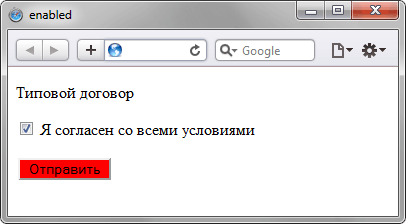

Псевдокласс :enabled
Псевдокласс :enabled используется для применения стиля к доступным (не заблокированным) элементам форм. По умолчанию, все элементы форм являются доступными, если в коде HTML к ним не добавляется атрибут disabled.
Синтаксис
Селектор:enabled { ... }Пример
<!DOCTYPE html>
<html>
<head>
<meta charset="utf-8">
<title>enabled</title>
<script>
function agreeForm(f) {
if (f.agree.checked) f.submit.disabled = 0;
else f.submit.disabled = 1;
}
</script>
<style>
input:enabled { background: red; }
</style>
</head>
<body>
<form>
<p>Типовой договор</p>
<p><input type="checkbox" name="agree" onclick="agreeForm(this.form)">
Я согласен со всеми условиями</p>
<p><input type="submit" name="submit" value="Отправить" disabled></p>
</form>
</body>
</html>В данном примере при включении галочки добавляется стиль к кнопке. Результат примера показан на рис. 1.

Рис. 1. Результат использования псевдокласса :enabled
Спецификация
| Спецификация | Статус |
|---|---|
| WHATWG HTML Living Standard | Живой стандарт |
| HTML5 | Возможная рекомендация |
| Selectors Level 4 | Рабочий проект |
| CSS Basic User Interface Module Level 3 | Рабочий проект |
| Selectors Level 3 | Рекомендация |
Браузеры
| Internet Explorer | Chrome | Opera | Safari | Firefox |
| 9 | 1 | 9 | 3.1 | 1 |
| Android | Firefox Mobile | Opera Mobile | Safari Mobile |
| 2.1 | 1 | 9.5 | 3.1 |